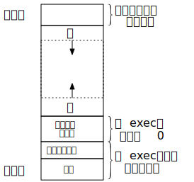
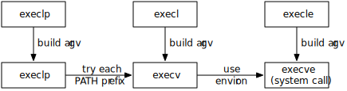

进程控制
fork 函数
下图为，C 程序的存储空间布局（典型）

一个现有进程可以调用 fork 函数创建一个新进程
fork 函数被调用一次，但返回两次，
两次返回的唯一区别是子进程的返回值是 0, 而父进程的返回值是新子进程的 PID
子进程和父进程继续执行 fork 调用之后的指令
在上图的存储空间布局中，父子进程只共享正文段，其余的都各自有独立的副本 （通常使用 copy-on-write 的策略，速度比较快）
父进程的如下属性由子进程继承：
- Real user ID, real group ID, effective user ID, and effective group ID
- Supplementary group IDs
- Process group ID
- Session ID
- Controlling terminal
- The set-user-ID and set-group-ID flags
- Current working directory
- Root directory
- File mode creation mask
- Signal mask and dispositions
- The close-on-exec flag for any open file descriptors
- Environment
- Attached shared memory segments
- Memory mappings
- Resource limits
父子进程的区别：
- The return values from fork are different.
- The process IDs are different.
- The two processes have different parent process IDs: the parent process ID of the child is the parent; the parent process ID of the parent doesn't change.
- The child's tms_utime, tms_stime, tms_cutime, and tms_cstime values are set to 0 (these times are discussed in Section 8.17).
- File locks set by the parent are not inherited by the child.
- Pending alarms are cleared for the child.
- The set of pending signals for the child is set to the empty set.
fork 的两种用法
父子进程同时执行不同的代码段
典型应用：Web 服务器
以下代码是简单的 fork 父子进程分别执行不同的代码
#include <unistd.h>
#include <stdlib.h>
#include <stdio.h>
#define err_sys(x) do { perror(x); exit(1); } while (0)
void invoke_child(char ch)
{
printf("%c\n", ch);
}
int main(int argc, char *argv[])
{
pid_t pid;
int cnt = 3;
char arg[] = "abc";
while(cnt--) {
if ((pid = fork()) < 0) {
err_sys("Fork error");
} else if (pid == 0) {
invoke_child(arg[cnt]);
exit(0);
}
}
return 0;
}
一个进程要执行一个不同的程序
典型应用：Shell
exec 系列函数
| Function | pathname | filename | arg list | argv[] | environ | envp[] |
|---|---|---|---|---|---|---|
| execl | * | * | * | |||
| execlp | * | * | * | |||
| execle | * | * | * | |||
| execv | * | * | * | |||
| execvp | * | * | * | |||
| execve | * | * | * | |||
| (letter in name) | p | l | v | e |
这些函数主要区别如下：
pathname 和 filename
filename 作为参数时：
- 如果 filename 中包含 /, 则将其视为路径名
- 否则就按 PATH 环境变量，在它所指定的各目录中搜寻可执行文件
如果找到了一个可执行文件，但是该文件不是机器码可执行文件， 则认为该文件是一个 shell 脚本，于是试着调用 /bin/sh 并以该 filename 作为 shell 的输入
arg list 和 argv[]
当使用 arg list 时，在最后一个命令行参数需要跟一个字符型空指针，例如：
char *arg0, char *arg1, ..., char *argn, (char *)0environ 和 envp[]
带有 envp[] 参数的函数可以传递一个指向环境字符串指针数组的指针
其它函数则调用进程中的 environ 变量为新程序复制现有的环境
执行新程序的进程保留如下原进程的特征：
- Process ID and parent process ID
- Real user ID and real group ID
- Supplementary group IDs
- Process group ID
- Session ID
- Controlling terminal
- Time left until alarm clock
- Current working directory
- Root directory
- File mode creation mask
- File locks
- Process signal mask
- Pending signals
- Resource limits
- Nice value (on XSI-conformant systems; see Section 8.16)
- Values for
tms_utime,tms_stime,tms_cutime, andtms_cstime
这几个函数之间的关系如下图：

exec 函数实例
#include <stdio.h>
int main(int argc, char *argv[])
{
extern char **environ;
/* echo all command-line args */
for (int i = 0; i < argc; i++) {
printf("argv[%d]: %s\n", i, argv[i]);
}
/* and all env strings */
for (char **ptr = environ; *ptr != 0; ptr++) {
printf("%s\n", *ptr);
}
return 0;
}
将上面这个程序编译为 echoall, 放在 /Users/mwum/bin 中
#include <unistd.h>
#include <stdio.h>
#include <stdlib.h>
#define err_sys(x) do { perror(x); exit(1); } while (0)
char *env_init[] = { "USER=unknown", "PATH=/tmp", NULL };
int main(int argc, char *argv[])
{
pid_t pid;
if ((pid = fork()) < 0) {
err_sys("fork error");
} else if (pid == 0) {
if (execle("/Users/mwum/bin/echoall",
"echoall", "myarg1", "myarg2", (char *)0, env_init) < 0)
err_sys("execle error");
}
if (waitpid(pid, NULL, 0) < 0) {
err_sys("wait error");
}
if ((pid = fork()) < 0) {
err_sys("fork error");
} else if (pid == 0 ) {
if (execlp("echoall",
"echoall", "only 1 arg", (char *)0) < 0)
err_sys("execlp error");
}
return 0;
}
编译以上程序，执行结果如下：
$ ./a.out
argv[0]: echoall
argv[1]: myarg1
argv[2]: myarg2
USER=unknown
PATH=/tmp
argv[0]: echoall
argv[1]: only 1 arg
...
孤儿进程，守护进程，僵尸进程
父进程先于子进程结束，这时子进程称为孤儿进程
为避免孤儿进程退出时无法释放所占用的资源而僵死，任何孤儿进程产生时都会立即为系统进程 init 自动接收为子进程
用户也可能会刻意使进程成为孤儿进程，以使之与用户会话脱钩，并转至后台运行。 这一做法常应用于启动需要长时间运行的进程，也即守护进程
一个已经终止，但是其父进程尚未对其进行善后处理的进程被称为僵尸进程ps 命令将僵死进程的状态打印为 Z